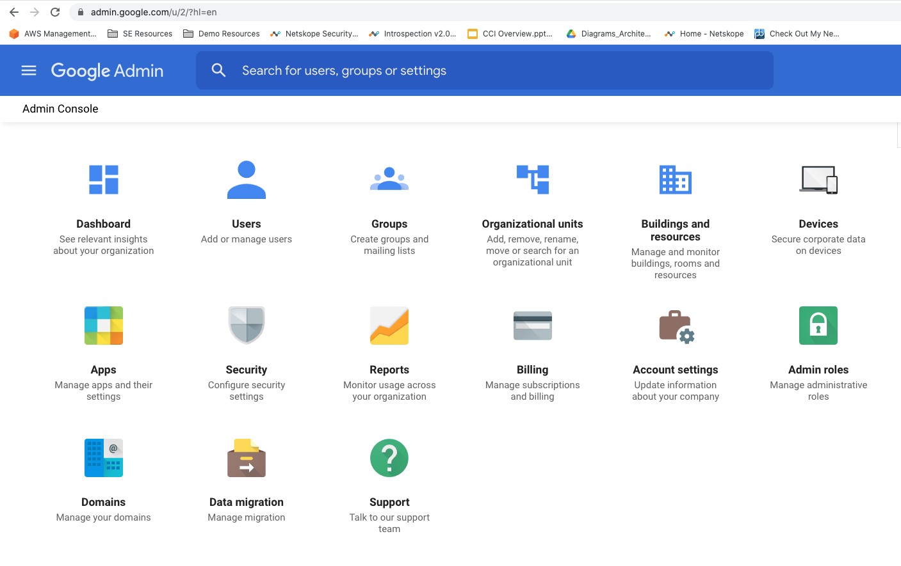
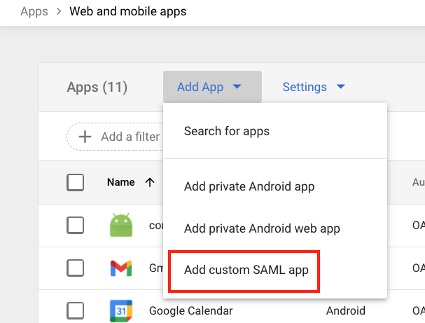
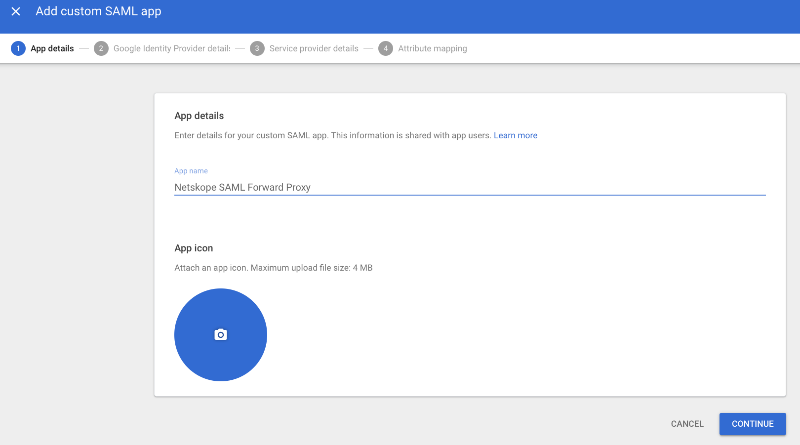
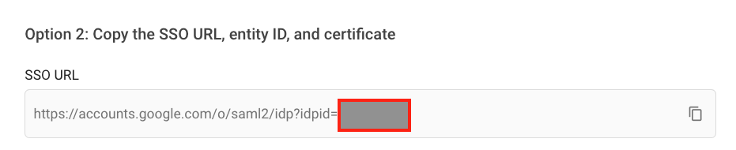
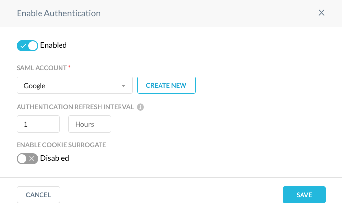

Configure Google IdP for Netskope SAML Forward Proxy
This procedure involves using the Netskope UI and Google Console simultaneously, so use separate browser tabs to change between them between some of the steps. Also have a text editor handy with the Netskope SAML settings you copied previously; you'll be copying and pasting some Google settings during this process as well.
Log in to the Google Workspace Admin Console as a Super Administrator.
 Click Apps.

Click SAML Apps.

Select Add App > Add custom SAML app
 Enter a unique name.
 Optionally you can upload a logo. When finished, click Continue.
Copy the SSO URL and paste in a text editor.
 Copy the Entity ID and paste in a text editor.

Copy the Certificate and paste in a text editor.

In the Netskope tenant, go to Settings > Security Cloud Platform > Forward Proxy > SAML
Select Add Account and enter these parameters:
Name: Enter a descriptive name.
IDP URL: Paste the SSO URL copied from Google.
IDP Entity ID: Paste the Entity ID copied from Google.
IDP Certificate: Paste the Certificate copied from Google.
When finished, click Save.
In the Google console, click Continue and enter these parameters:
ACS URL: Paste the SAML ACS URL copied from the Netskope UI (in the first section).
Entity ID: Paste the SAML Entity ID copied from the Netskope UI.

Leave everything else as default and select Continue.
On the Attributes page, select Finish.
Ensure Service Status is On for Everyone.

In the Netskope tenant, go to Settings > Security Cloud Platform > Forward Proxy > Authentication and click Enable Authentication.
Activate the Enable toggle, select the SAML Account created in step 10, and then click Save.
